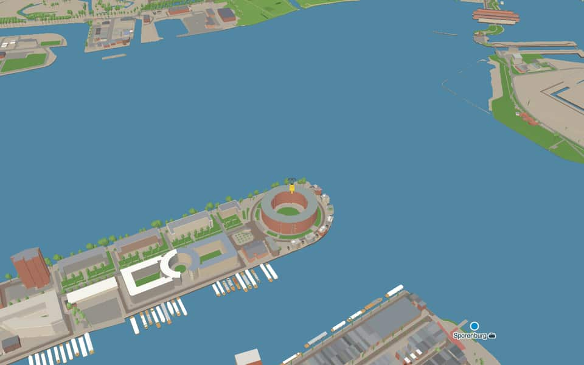
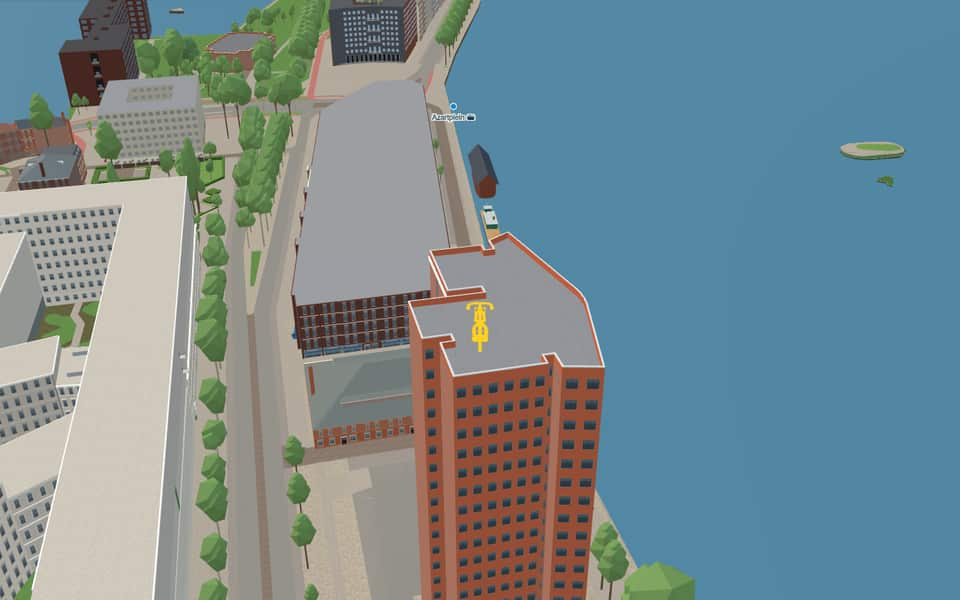

Neighbourhood in Oostelijk Havengebied
KNSM-eiland
The KNSM-eiland is a peninsula in the IJ, one of eleven neighbourhoods in the Eastern Docklands. nl.wikipedia.org
The name. Named after the Royal Netherlands Steamship Company (KNSM), based here from 1903 to 1979. The old quays Levantkade and Surinamekade kept the names of the company's main destinations. nl.wikipedia.org
Ride KNSM-eiland21 facts · 14 name stories


In the game
Frames from a ride through KNSM-eiland.


6 more photos of KNSM-eiland

.jpg){kind=link}


.JPG){kind=link}


.jpg){kind=link}
Built here
Buildings modelled one by one for the ride.
Nothing here is individually modelled yet: the ride draws KNSM-eiland from the city's 3D building register (3DBAG), with real heights and roofs.
Did you know
Trivia the ride can show you here.
- Wiel Arets's Skydome (1996) is the only residential tower on the KNSM-eiland. Wikipedia (translated from Dutch)
- The peninsula is known as a showcase of late-20th-century architecture. Wikipedia (translated from Dutch)
- After the occupiers destroyed the cranes in 1944, Kraan 2868 was built by Figee in 1957. Wikipedia (translated from Dutch)
- By the Mien Ruysplantsoen, five tall poplars across the KNSM-laan are all that remain of ‘De Zeven Zusters’. Wikipedia (translated from Dutch)
- Kraan 2868The crane officially became a municipal monument in late November 2011. nl.wikipedia.org
- Mien RuysplantsoenMien Ruys came from a Rotterdam family of shipping and cargo drivers. nl.wikipedia.org
- Mien RuysplantsoenFive tall poplars across the street are all that remain of a group once called The Seven Sisters. nl.wikipedia.org
- Amsterdam-RijnkanaalA young engineer named Anton Mussert drafted the final plan before becoming notorious. en.wikipedia.org
- Amsterdam-RijnkanaalWorld War II delayed the project until Queen Juliana officially opened it in May 1952. en.wikipedia.org
- Amsterdam-RijnkanaalThe canal stretches 72 km, spans over 100 meters wide, and reaches a depth of 6 meters. en.wikipedia.org
- Amsterdam-RijnkanaalIn 2016 alone, 91,495 vessels navigated its waters carrying over 77 million tons of cargo. en.wikipedia.org
- ErtshavenThe name Ertshaven reflects the heavy silt overflow that once characterized this water. nl.wikipedia.org
- ErtshavenThe Blauwehoofdbrug spans the port while it discharges into the Amsterdam-Rhine Canal. nl.wikipedia.org
- IJThe largest part of the IJ was reclaimed between 1865 and 1876 to create new polders. en.wikipedia.org
7 more facts
- IJThe Buiten-IJ hosted mixed dinghy sailing events during the 1928 Summer Olympics in Amsterdam. en.wikipedia.org
- IJOranjesluizen locks divide the waterway into an inner section and an outer extension. en.wikipedia.org
- IJThe western part connects directly to the North Sea Canal while the eastern side extends the IJmeer. en.wikipedia.org
- OranjesluizenBy 1971, the locks still required 42 employees to operate manually despite handling 80,000 vessels. en.wikipedia.org
- OranjesluizenThe dam's slopes and top were covered with at least one meter of puddle clay for waterproofing. en.wikipedia.org
- OranjesluizenBy October 1866, construction had already reached the future lock site in Schellingwoude. en.wikipedia.org
- OranjesluizenTwo sections of the foundational ground pieces later broke, causing significant sinking. en.wikipedia.org
Names on the map
Where the canal, bridge and street names come from.
Canals and water
- Amsterdam-RijnkanaalBusy canal, 72 kilometres long, that links the IJ via Utrecht to the Waal near Tiel. It is part of an important route to the Ruhr area.
- ErtshavenOre boats used to be unloaded at this quay.
- OranjesluizenAfter the House of Orange-Nassau, to which the royal family belongs. The first stone of the Oranjesluizen was laid by the then king, William III, on 29 April 1870.
2 other canals without a recorded story
IJ · Zijkanaal K naar Nieuwendam
Streets
- AzartpleinSince 1992 this has been the unofficial name of the spot on the island where the first new residents of the area got to know the boat dwellers and artists who were already living there. 'Azart' is Russian for inspiration.
- BarcelonapleinA port city on the east coast of Spain, to which the former KNSM (see KNSM-laan) ran a regular shipping service.
- KNSM-laanThe Koninklijke Nederlandsche Stoomboot-Maatschappij (Royal Netherlands Steamship Company), founded in 1856 and one of the largest Dutch shipping companies. It ran scheduled services to the West Indies, Central America, the west and north coasts of South America, the Levant and European ports, and also sailed between North and South America. In 1981 the KNSM was absorbed into the Koninklijke Nedlloyd group.
- LevantkadeAfter the region of the Levant (the coasts of Asia Minor, Syria, Egypt, Lebanon and Israel), to which the former KNSM ran a scheduled service.
- LevantpleinAfter the region of the Levant (the coasts of Asia Minor, Syria, Egypt, Lebanon and Israel), to which the former KNSM ran a scheduled service.
- MessinastraatAn Italian port on Sicily, to which the former KNSM ran a scheduled service.
- PiraeuspleinA Greek port, to which the former KNSM ran a scheduled service.
- SurinamekadeRefers to the country of Suriname.
- VenetiëhofThe Italian port to which the former KNSM ran a regular service.
- VenetiëstraatThe Italian port to which the former KNSM ran a regular service.
- VerbindingsdamA dam in the Ertshaven.